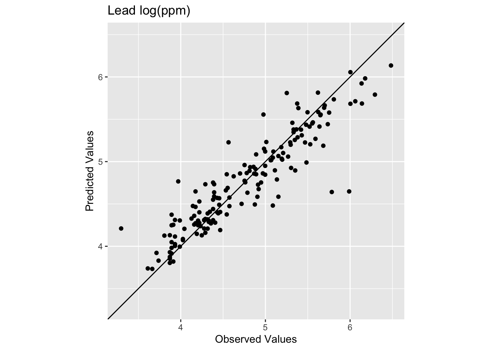
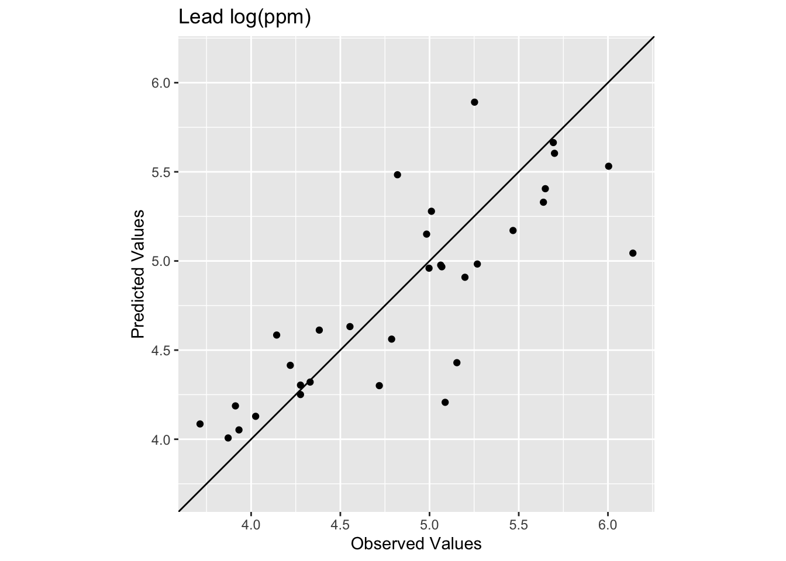

Code
library(fields)
library(tidyverse)
library(gstat)
library(sf)
library(terra)
library(tidyterra)In Hijmans’s Interpolation he covers thin-plate splines using an example but doesn’t discuss the theory at all. Bivand also waves at it in Ch 8. ESRI has a decent reading on radial basis functions that is worth a look.
IDW was our first crack at spatial interpolation. Simple, transparent, and completely deterministic. Thin-plate splines (TPS) are also deterministic, but the philosophy is different. Instead of weighting nearby points by distance, TPS fits a single smooth surface to all the data at once, penalizing roughness globally rather than reasoning locally from neighbors. The payoff is a smoother surface with none of the bullseye artifacts IDW made in sparse areas. The cost is that TPS is a black box. The math is complex, the fitting is automatic, and the surface can over-smooth in ways that are hard to diagnose.
Like IDW, TPS gives you a surface but no measure of uncertainty. That’s still coming.
The fields package (Nychka et al. 2025) is your friend.
library(fields)
library(tidyverse)
library(gstat)
library(sf)
library(terra)
library(tidyterra)The name comes from a physical analogy. Imagine a thin sheet of steel or rubber that is flexible but resistant to bending. Pin it down at every data point, forcing it to pass through (or near) each observed value. The sheet will settle into the shape that satisfies all those constraints while bending as little as possible overall. That’s the core idea.
More formally, TPS finds a function \(f(x,y)\) that minimizes:
\[\sum_{i=1}^n \left(z_i - f(x_i, y_i)\right)^2 + \lambda \int \int \left[ \left(\frac{\partial^2 f}{\partial x^2}\right)^2 + 2\left(\frac{\partial^2 f}{\partial x \partial y}\right)^2 + \left(\frac{\partial^2 f}{\partial y^2}\right)^2 \right] dx\, dy\]
The first term is the residual sum of squares (how well the surface fits the data) and the second term is the roughness penalty (how much the surface bends). The smoothing parameter \(\lambda\) controls the trade-off. A small \(\lambda\) allows the surface to flex and hit every point more closely. A large \(\lambda\) enforces smoothness at the cost of fit. But unlike IDW, rather than you choosing \(\lambda\) by hand (the way you’d tune \(p\)), TPS selects it automatically using generalized cross-validation (GCV). The GCV criterion asks: for what value of \(\lambda\) does the model predict left-out points best? The fitting algorithm tries values and converges on the answer. That is an improvement over IDW’s tuning-by-eye approach.
The whole equation is saying: find the surface \(f\) that fits the data reasonably well (first term) without bending too much (second term). The output of solving that problem is the interpolated surface.
TPS belongs to a broader family called radial basis functions (RBFs). The “radial” part means the basis functions depend only on distance from each data point, similar in spirit to the distance weights in IDW. The difference is that TPS combines all these basis functions into a single global surface, whereas IDW makes each prediction locally from its nearest neighbors. That global character is why TPS avoids the bullseye problem: instead of each data point dominating its own neighborhood, TPS has to reconcile all the points simultaneously. The downside is that what happens in one corner of the domain can subtly influence every other corner.
There is no toy example here the way there was for IDW. I can’t walk through the TPS calculation by hand the way I walked through the weighted average. The matrix math involved is doable in principle but not particularly illuminating. For our purposes we will trust the implementation and focus on what the surface looks like and how it performs. If you want the gory details this vignette by Ashton Wiens and Mitch Krock is excellent.
Let’s redo the Meuse lead application from the IDW module. We will use the same data, the same grid, but a different method. I won’t repeat all the setup commentary, you can refer back to that chapter if you need a refresher on what meuse.all and meuse.grid are.
data(meuse.all)
meuse.all$logLead <- log(meuse.all$lead)
meuse_sf <- st_as_sf(meuse.all, coords = c("x", "y")) %>%
st_set_crs(value = 28992)
meuse.grid <- readRDS("data/meuse.grid.Rds")ggplot(data = meuse_sf) +
geom_sf(aes(fill=logLead), size=4,
shape = 21, color="white",alpha=0.8)+
scale_fill_continuous(type = "viridis",name="log(ppm)") +
labs(title="Lead concentrations")
The Tps function from fields fits the thin-plate spline model. It takes x, a matrix of coordinates, and Y, the response variable (Yes, that is confusing variable naming. Why not x, y, and z?). Note that fields is less fussy about object classes than gstat so we can work directly on data.frame objects rather than converting to sf.
logLeadTPSmodel <- Tps(x = meuse.all[,2:3], Y = meuse.all$logLead)
logLeadTPSmodelCall:
Tps(x = meuse.all[, 2:3], Y = meuse.all$logLead)
Number of Observations: 164
Number of parameters in the null space 3
Parameters for fixed spatial drift 3
Model degrees of freedom: 52.9
Residual degrees of freedom: 111.1
GCV estimate for tau: 0.3336
MLE for tau: 0.3234
MLE for sigma: 283
lambda 0.00037
User supplied sigma NA
User supplied tau^2 NA
Summary of estimates:
lambda trA GCV tauHat -lnLike Prof converge
GCV 0.0003695884 52.90957 0.1643391 0.3336467 100.42451 1
GCV.model NA NA NA NA NA NA
GCV.one 0.0003695884 52.90957 0.1643391 0.3336467 NA 1
RMSE NA NA NA NA NA NA
pure error NA NA NA NA NA NA
REML 0.0005981435 43.76282 0.1651385 0.3479539 99.82424 5The output is worth working through. Let’s go term by term.
Number of parameters in the null space: 3. Before TPS fits the smooth spatial surface, it first fits a low-order polynomial as a baseline. In 2D with the default settings, that polynomial is linear in \(x\) and \(y\) (intercept plus an \(x\) coefficient plus a \(y\) coefficient) so three parameters. This captures any broad linear spatial trend in the data before the smooth correction is layered on top.
Model degrees of freedom: 52.9 and Residual degrees of freedom: 111.1. These add up to 164, the number of observations. Model degrees of freedom is the EDF, or effective degrees of freedom (roughly how many parameters the model is using to fit the surface). With EDF = 52.9, the model is using about a third of the data’s worth of parameters. The remaining 111.1 go toward estimating residual error. This concept doesn’t exist in IDW at all. There’s no equivalent of “how many parameters did IDW use” because IDW isn’t fitting a model in this sense.
GCV estimate for tau: 0.3336 and MLE for tau: 0.3234. \(\tau\) is the estimated noise standard deviation (the scatter of residuals around the fitted surface). Since we’re on the log scale, \(\tau \approx 0.33\) log(ppm). The two estimates (GCV and MLE) land close to each other, which is a good sign.
MLE for sigma: 283. This is confusing because fields uses “sigma” here to mean the scale of the spatial covariance, roughly the overall variance of the spatial signal. It has nothing to do with \(\tau\). The ratio \(\lambda = \tau^2 / \sigma\) is what controls the smoothness trade-off.
lambda: 0.00037. The chosen smoothing parameter. Very small, meaning the surface is quite flexible. You can sanity-check this: \(\tau^2 / \sigma \approx 0.3234^2 / 283 \approx 0.00037\).
The last rows of the summary, GCV and REML, show two different criteria for choosing \(\lambda\). They land on similar values of \(\lambda\) and \(\tau\) here, which is reassuring. When they agree, you can trust the chosen \(\lambda\) more. When they disagree a lot, think harder about what the model is doing.
GCV stands for Generalized Cross-Validation. The “generalized” part is worth talking about as you’ve seen “regular” cross-validation in the Model Skill and Cross Validation aside.
In LOOCV you remove each observation, refit the model without it, predict it back, and repeat \(n\) times. It works, but you’re fitting 164 separate models to find the best \(\lambda\). GCV approximates that process using a mathematical shortcut. Rather than actually leaving each point out, it uses the model’s hat matrix – a matrix that describes how much each observation influences its own prediction – to estimate what LOOCV would give for any value of \(\lambda\) without refitting the model each time. That’s the “generalized” part: it generalizes cross-validation from something you do by brute force to something you can compute analytically from a single model fit.
The result is the same thing you want from LOOCV: the \(\lambda\) that minimizes prediction error on left-out points. You just get there without the computational cost. REML (also shown in the summary) is a different method for choosing \(\lambda\) based on likelihood rather than prediction error. They usually agree, and they do here.
Now let’s predict over the full grid and make a raster.
Note that we’re calling predict() again here which is the same generic function we used with gstat objects in the IDW module. It dispatches to a different method under the hood because logLeadTPSmodel is a Tps object rather than a gstat object, but the interface looks the same. That’s generics doing their job.
# Predict the model over all the coordinates in meuse.grid
logLeadPreds <- c(predict(object=logLeadTPSmodel, x = meuse.grid[,1:2]))
# Store in a data.frame with the x,y coordinates
logLeadTPS <- data.frame(x = meuse.grid[,1],
y = meuse.grid[,2],
logLead=logLeadPreds)
# And into SpatRaster
logLeadTPS_rast <- rast(logLeadTPS, crs=crs(meuse_sf))
# Plot
ggplot() +
geom_spatraster(data=logLeadTPS_rast, mapping = aes(fill=logLead),alpha=0.8) +
scale_fill_continuous(type = "viridis",name="log(ppm)",na.value = "transparent") +
labs(title="Lead concentrations", subtitle = "TPS") +
theme_minimal()
Compare that to the IDW surface from the last module. No craters. The sparse center of the study area gets a smooth interpolation rather than bullseyes around each isolated point. That’s the global nature of TPS doing its job.
Now let’s check the numbers. First the in-sample fit, using all 164 observations to build the model and evaluating at those same locations.
obs <- meuse.all$logLead
preds <- extract(logLeadTPS_rast, meuse_sf) %>% pull(logLead)
rsq <- cor(obs,preds)^2
rmse <- sqrt(mean((preds - obs)^2))
c(rsq = rsq, rmse = rmse) rsq rmse
0.8339454 0.2773502 ggplot() +
geom_abline(slope=1,intercept = 0) +
geom_point(aes(x=obs,y=preds)) +
coord_fixed(ratio=1, xlim = range(preds,obs),ylim = range(preds,obs)) +
labs(x="Observed Values",
y="Predicted Values",
title="Lead log(ppm)")
Here we have R\(^2\) of 0.834 and a reasonable RMSE of 0.277. Notice these in-sample numbers tell a more informative story than IDW’s 0.99 R\(^2\) did. IDW is exact at data locations in theory – the weight to each point from itself becomes infinite and overwhelms everything – so its in-sample performance is essentially perfect by construction. TPS is different. The GCV smoothing means the fitted surface doesn’t pass through every point exactly, so you have in-sample residuals. That’s the smoothing penalty doing its job.
Notice also that the low observed values are getting consistently overpredicted. The smooth TPS surface can’t accommodate those low values in the sparse center of the study area without distorting everything else, so it compromises and pulls them up. We’ll come back to this.
Let’s do a proper train/test evaluation. Here is a 80%/20% split.
n <- nrow(meuse.all)
rows4test <- sample(x = 1:n,size = n*0.2)
meuseTest <- meuse.all[rows4test,]
meuseTrain <- meuse.all[-rows4test,]
# Note meuseTrain here
logLeadTPSmodel <- Tps(x = meuseTrain[,2:3], Y = meuseTrain$logLead)
logLeadTPSmodelCall:
Tps(x = meuseTrain[, 2:3], Y = meuseTrain$logLead)
Number of Observations: 132
Number of parameters in the null space 3
Parameters for fixed spatial drift 3
Model degrees of freedom: 42.8
Residual degrees of freedom: 89.2
GCV estimate for tau: 0.3512
MLE for tau: 0.3395
MLE for sigma: 250.1
lambda 0.00046
User supplied sigma NA
User supplied tau^2 NA
Summary of estimates:
lambda trA GCV tauHat -lnLike Prof converge
GCV 0.0004607581 42.75261 0.1824605 0.3512329 86.29005 1
GCV.model NA NA NA NA NA NA
GCV.one 0.0004607581 42.75261 0.1824605 0.3512329 NA 1
RMSE NA NA NA NA NA NA
pure error NA NA NA NA NA NA
REML 0.0007638656 35.12587 0.1834245 0.3668982 85.76721 6# Predict the model over all the coordinates in meuse.grid
logLeadPreds <- c(predict(object=logLeadTPSmodel, x = meuse.grid[,1:2]))
# Store in a data.frame with the x,y coordinates
logLeadTPS <- data.frame(x = meuse.grid[,1],
y = meuse.grid[,2],
logLead=logLeadPreds)
# And into SpatRaster
logLeadTPS_rast <- rast(logLeadTPS, crs=crs(meuse_sf))
# Look at skill on withheld data. Note meuseTest:
obs <- meuseTest$logLead
preds <- extract(logLeadTPS_rast, meuseTest[,2:3]) %>% pull(logLead)
rsq <- cor(obs,preds)^2
rmse <- sqrt(mean((preds - obs)^2))
c(rsq = rsq, rmse = rmse) rsq rmse
0.6505462 0.3907406 ggplot() +
geom_abline(slope=1,intercept = 0) +
geom_point(aes(x=obs,y=preds)) +
coord_fixed(ratio=1, xlim = range(preds,obs),ylim = range(preds,obs)) +
labs(x="Observed Values",
y="Predicted Values",
title="Lead log(ppm)")
We see now that skill of the model is decreased with R\(^2\) = 0.651 and RMSE = 0.391 as these are out-of-sample tests. The exact numbers vary with the random split, but you should be in that neighborhood.
How does that RMSE look against the simplest possible baseline, predicting the training mean everywhere?
rmseNULL <- sqrt(mean((mean(meuseTrain$logLead) - obs)^2))
rmseNULL[1] 0.6614091 - (rmse / rmseNULL)[1] 0.40923TPS beats the null. The skill score here (0.409) usually lands around 0.35-0.45 depending on the random split. Compare that to IDW from the last module, where the skill score was around 0.22-0.25. TPS is doing better, though not dramatically. For a full treatment of how to interpret these skill scores, see the Model Skill and Cross Validation aside.
In terms of skill scores, TPS and IDW are in the same neighborhood on the Meuse data. TPS tends to do a bit better out-of-sample, but the margins are not large.
What is clearly different is how the two methods fail. IDW made craters in the sparse center of the study area. TPS smoothed those away, which looks better. But look at what TPS does instead: it consistently overpredicts the low values. The smooth surface can’t simultaneously honor the low values in the sparse center and the high values near the river without distorting everything in between. So it splits the difference, and the extremes lose.
You could make the case either way. If you need a smooth-looking surface that gets the broad spatial pattern right, TPS is probably the better choice. If the extreme values matter – if the low-lead areas in the center of the floodplain are scientifically important, say – then IDW’s craters are at least clear about how little information the model has there. TPS hides that uncertainty under a plausible-looking surface.
Neither method is right in general. It depends on the data and what you need from the output. Which brings us to the biggest limitation they share.
Thin-plate splines give you something IDW doesn’t: a principled, data-driven way to control smoothness. The GCV fitting is useful – you don’t have to tune a power parameter by hand and hope for the best. The surface looks cleaner and tends to generalize a bit better. But TPS is still deterministic. There is no probability model underneath it, no uncertainty estimate, and no way to know how confident you should be in any particular prediction.
Both IDW and TPS produce a surface but tell you nothing about how wrong it might be. If you want to know whether a predicted value of 4.8 log(ppm) at some unsampled location could plausibly be 3.8 or 5.8, IDW and TPS have nothing to say. You just get the 4.8 and are expected to be satisfied with it.
That’s what kriging fixes. Kriging is a probabilistic method that uses the variogram (which you already know from the autocorrelation module) to model the spatial structure of the data and produce a prediction surface with an actual uncertainty estimate alongside it. That var1.var column that was full of NAs in the IDW output? Kriging fills it in, and it means something. That’s the next chapter.
None for this module. This is meant as an add-on to introduce you to TPS before we move on to kriging. That said, you should be able to apply this to the California precipitation data from the IDW assignment by following the workflow above.